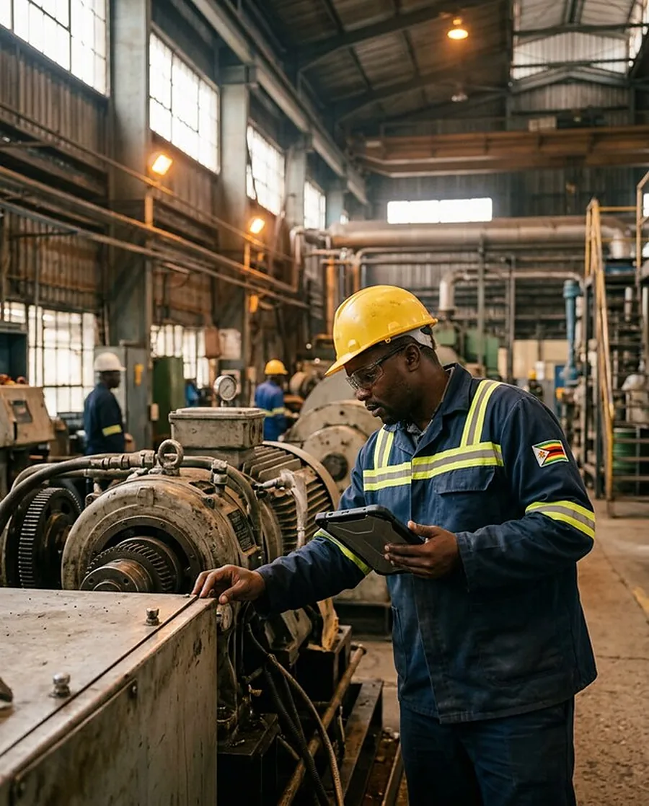
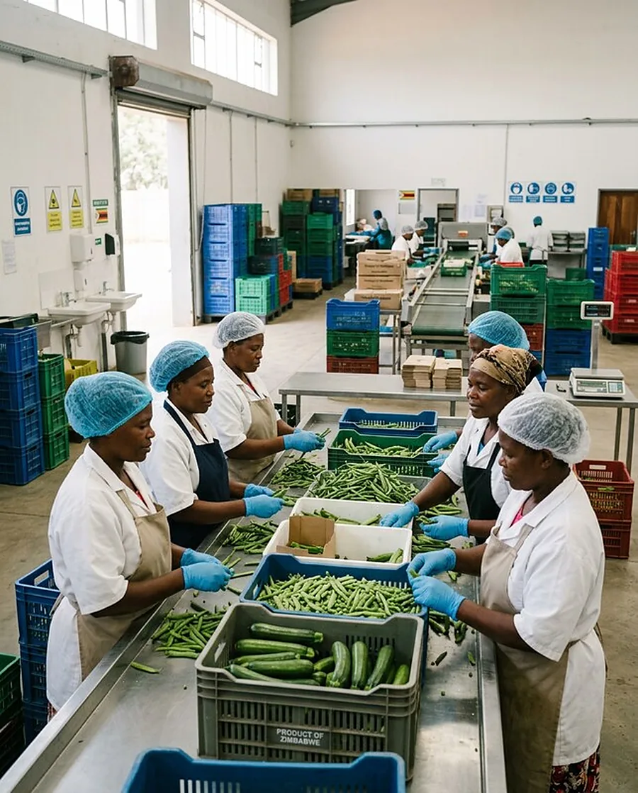
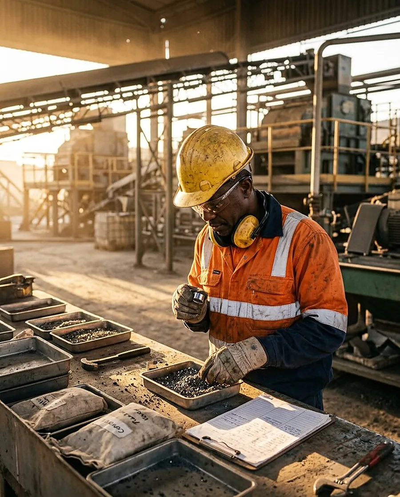
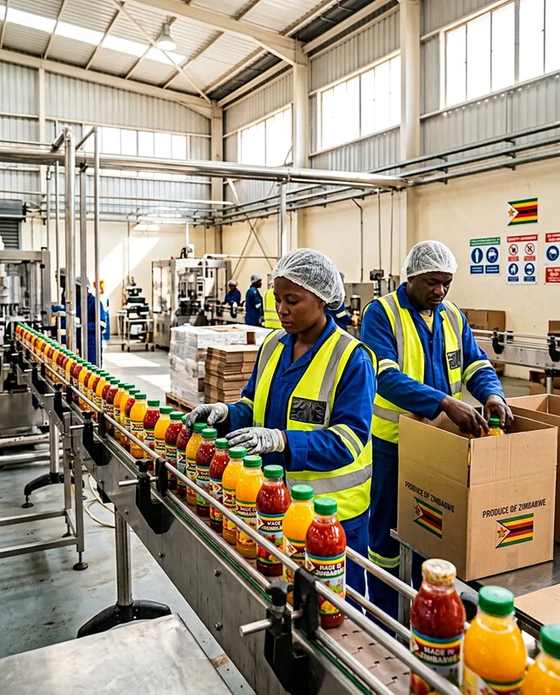
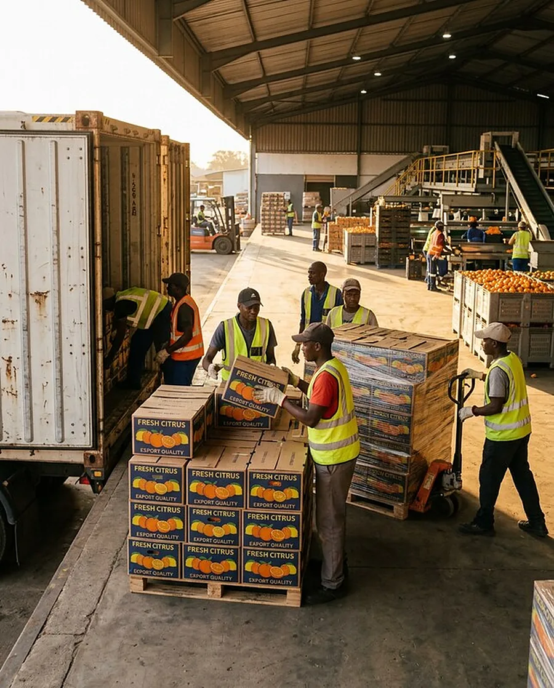

Zimbabwe rooted. Africa focused.
From opportunity to investment-ready enterprise.
We develop promising business opportunities into structured, commercially grounded projects. Built on discipline. Shaped for lasting value.
Our purpose
Good opportunities deserve strong foundations.
Strong ideas need more than ambition. They need robust commercial assessment, practical development pathways and structures that investors and partners can evaluate.
We connect project preparation, investment thinking and engagement with potential capital partners across Zimbabwe and the wider African region.
Get to know ChisiWhat we do
Clarity at every stage.
Purpose in every structure.
Project origination & development
Identifying and shaping commercially viable opportunities in productive sectors.
02Project preparation & investment structuring
Developing feasibility inputs, financial models and investable transaction structures.
03Capital mobilisation & transaction advisory
Supporting funding strategies and engagement with potential financiers and strategic investors.
04Fund development & investment strategy
Developing investment approaches and fund concepts, subject to relevant requirements.
05Strategic partnerships
Connecting technical, commercial and funding relationships to advance implementation.
Where we focus
Real enterprise.
Tangible value.

Manufacturing & industry
Projects that create or expand local productive capacity, including inputs and manufacturing value chains.

Agro-processing
Opportunities that transform agricultural output into higher-value products for domestic and regional markets.

Mineral beneficiation
Commercially grounded ventures that add value to mineral resources through processing and manufacturing.

Import substitution
Enterprises with credible demand for competitively produced goods that may replace imports.
Energy & infrastructure
Energy and enabling infrastructure that support viable enterprises and industrial activity.

Export value chains
Businesses positioned to serve regional customers and participate in cross-border supply chains.
The way forward
Ambition, meet discipline.
Discover
Understand the opportunity and its commercial context.
Assess
Test market demand and commercial fundamentals.
Structure
Prepare the project and its investment proposition.
Engage
Support dialogue with potential capital and technical partners.
Every opportunity is assessed on its own merits, subject to due diligence and applicable approvals.
Connected expertise
Entrepreneurial ideas.
Commercial possibilities.
We collaborate with the Centre for Impactful Entrepreneurs (CIE), connecting entrepreneurial development and incubation with commercial assessment, project preparation and investment structuring.
Meet our sister organisation, CIE